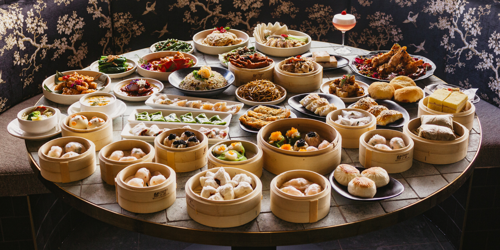

Food culture of China
The food culture can vary a lot as China is such a large country. Chinese takeaways aren't really representative
of the cuisine.
If you go to Chinatown in Leicester Square, the cuisine there represents mainly Hong kong/Cantonese
cuisine. Here are some variations of Chinese cuisine and what dishes they may serve.
- Cantonese/Hong Kong cuisine: There are things like Char Siu Pork and something we call Yum cha which is a cuisine enjoyed at afternoon
and it includes Dim Sum which is a variety of steamed pastries, fried pastries and more.
- Sichuan cuisine: Another cuisine in China is the Sichuan cuisine. This comes from the Sichuan province in western China.
This cuisine is very spice and usually includes spicy hotpot, twice cooked pork and mapo doufu.
- Beijing cuisine: This cuisine includes dishes like Peking duck, Peking barbeque, Chinese dumplings, Zhajiangmian
(noodle dish) and Douzhi.

A variety of Yum cha dishes from the Cantonese cuisine.